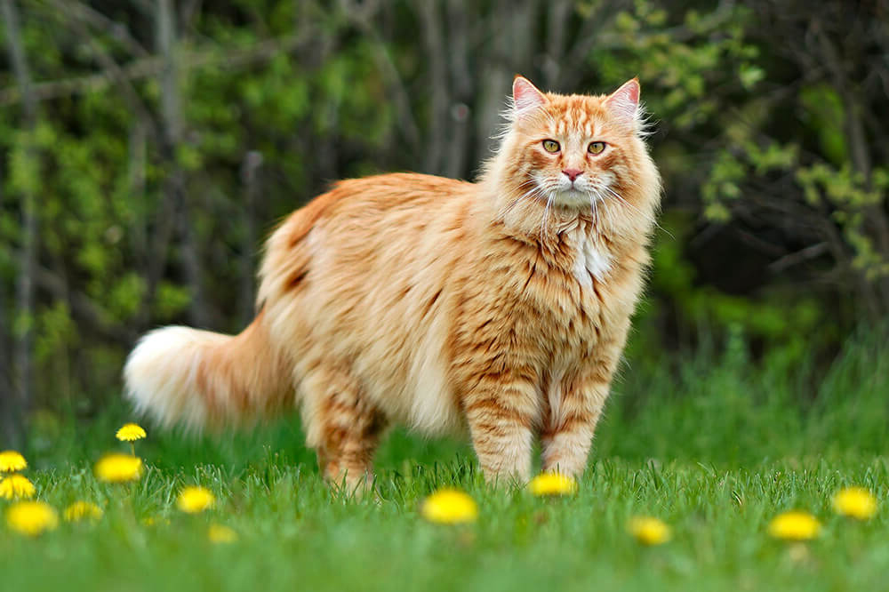
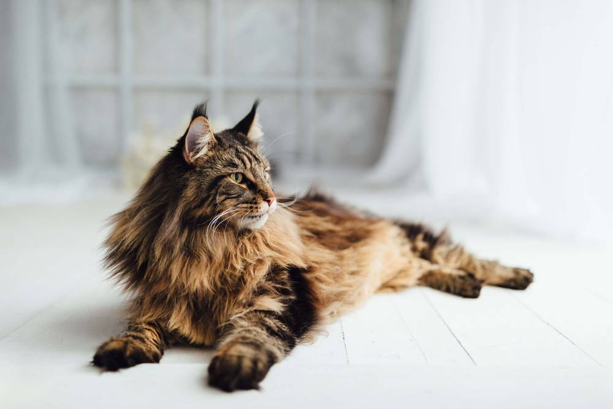

Факт 1
В отличие от большинства других кошек, представители этой породы любят купаться и играть с водой. Поэтому не отказывайте вашему мейн-куну в этом удовольствии!
В отличие от большинства других кошек, представители этой породы любят купаться и играть с водой. Поэтому не отказывайте вашему мейн-куну в этом удовольствии!
По крайней мере, по характеру уж точно! Они привязываются к своим хозяевам, даже несмотря на свой независимый характер. Кроме того, они легко дрессируются, поэтому с радостью научатся различным командам.

В отличие от большинства других кошек, представители этой породы любят купаться и играть с водой. Поэтому не отказывайте вашему мейн-куну в этом удовольствии!

Вместо обычного мяуканья мейн-куны часто издают уникальные звуки — курлыканье, похожее на воркование.